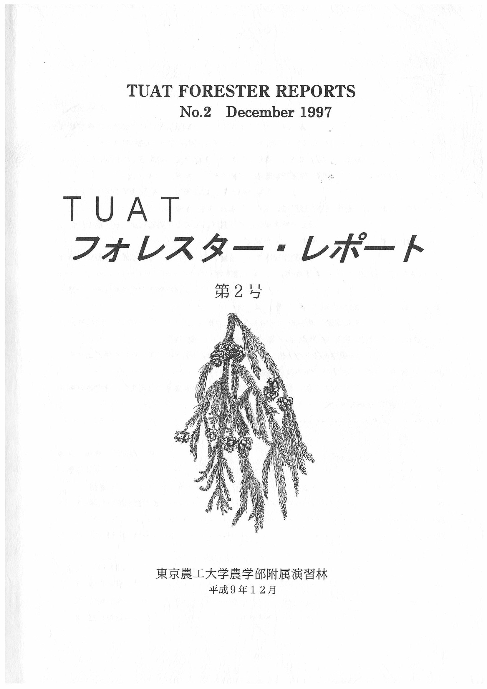

連絡先
- データに不具合を発見した場合には、以下までお問い合わせください。
浦川梨恵子（URAKAWA, Rieko）
現所属：北海道大学北方生物圏フィールド科学センター森林圏ステーション雨龍研究林
Email：urakawa”at”fsc.hokudai.ac.jp
「FM気象報告」は、森林生態学研究室の戸田浩人先生、森林資源管理学研究室の吉田智宏先生、小林勇太先生から提供いただいた気象データをとりまとめたものです。
業務の合間にボランティア活動で作業しています。データとりまとめは基本的に年に1回、1～3月に前年の1年分をまとめて作業することが多いです。当年のデータについては、演習林の関係者に直接お問い合わせください。
過去の気象データは演習林報告で公表されています。
- 計測機器の設置、運用開始：

- 戸田浩人・渡辺直明・木下光一・松崎秀司・金子邦治・金子喜一郎・桑原繁(1997)東京農工大学演習林の気象観測システムによる観測体制の確立.TUATフォレスター・レポート2:1-5.
- 金子邦治・金子喜一郎・桑原繁・桑原誠・星野茂雄・戸田浩人・渡辺直明(1997)東京農工大学大谷山演習林および苗畑の気象観測―システムの設置と1996年の気象概略―.TUATフォレスター・レポート2:6-14.
- 金子喜一郎・金子邦治・桑原繁・桑原誠・星野茂雄・戸田浩人・渡辺直明(1997)東京農工大学草木演習林の気象観測―システムの設置と1996年の気象概略―.TUATフォレスター・レポート2:15-23.
- 松崎秀司・野代庄作・熊倉充・戸田浩人・渡辺直明(1997)東京農工大学唐沢山演習林の気象観測―システムの設置と1996年の気象概略―.TUATフォレスター・レポート2:24-30.
- 木下光一・内田武次・木下浩幸・戸田浩人・渡辺直明(1997)東京農工大学埼玉演習林の気象観測―システムの設置と1996年の気象概略―.TUATフォレスター・レポート2:31-37.
- 1996年までの気象報告：東京農工大学農学部附属演習林編(1997)気象月報-1996
(5月～12月).TUATフォレスター・レポート2:61-88.
- 1997～2002年までの気象報告：小柳信宏・桑原繁・桑原誠・内田武次・熊倉充・戸田浩人(2003)東京農工大学フィールドミュージアムにおける森林地域の気象観測記録(1997～
2002).フィールドサイエンス3:37-47.
- 2003～2013年までの気象報告、他観測地点からデータ補完の際の係数の根拠：浦川梨恵子・木下浩幸・金子稔・熊倉充・桑原誠・岩下隆行・渡辺直明・吉田智弘・戸田浩人(2015)東京農工大学フィールドミュージアムにおける森林地域の気象観測記録(2003〜2013).フィールドサイエンス13:17-29.
ホームページに戻る